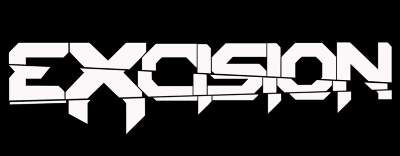
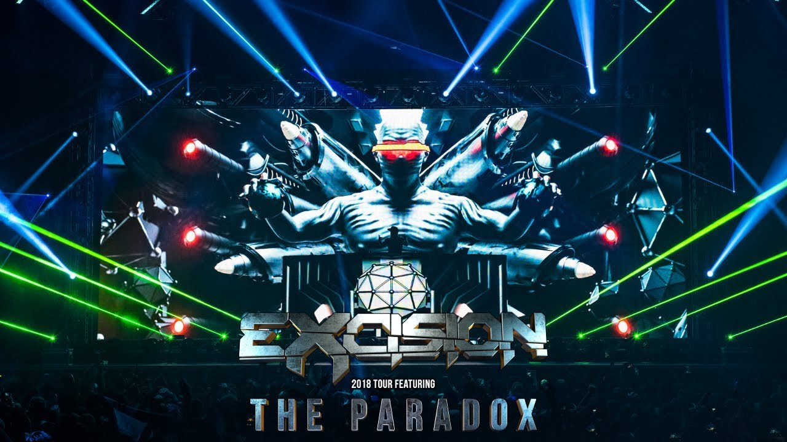
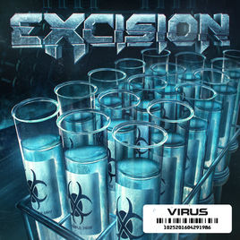
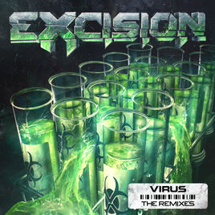
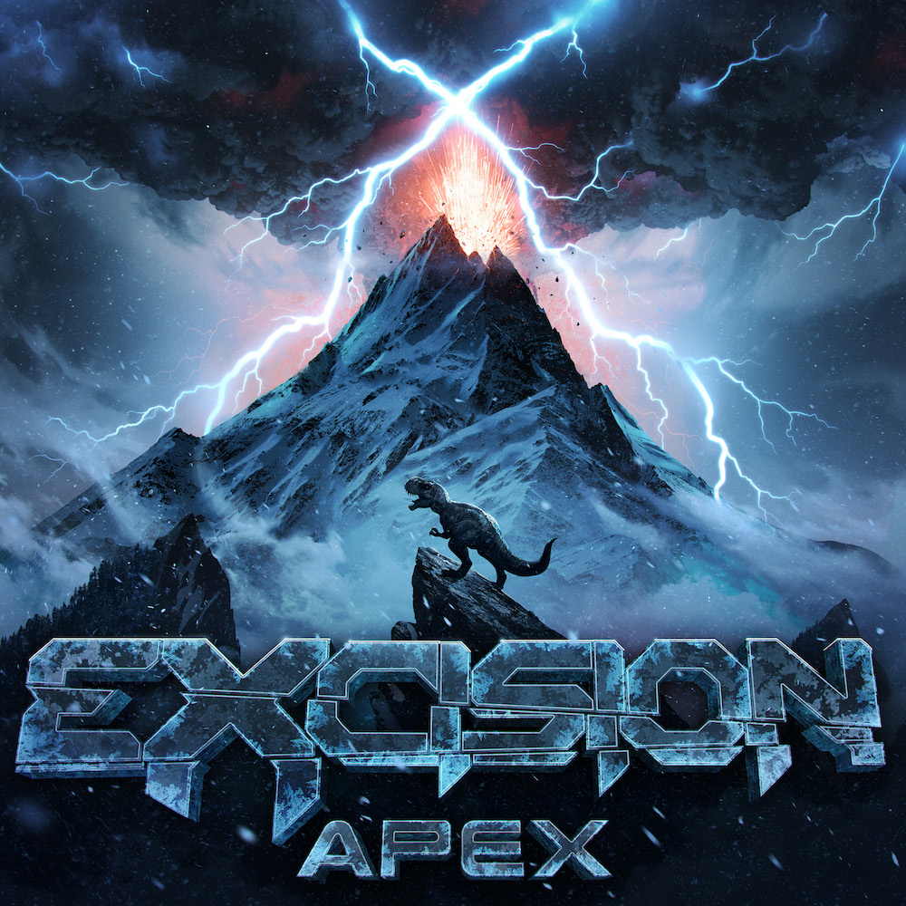
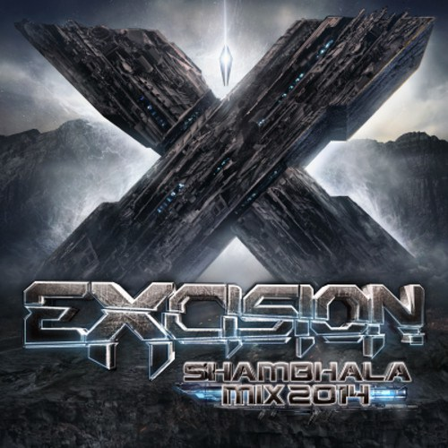
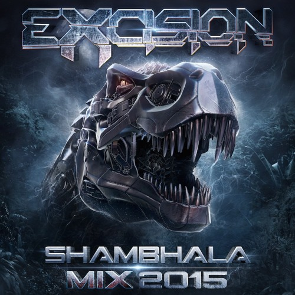

Excision
Jeff Abel, más conocido por su nombre artístico Excision, es un productor y DJ canadiense.
Con frecuencia trabaja con otros productores canadienses de dubstep Datsik y Downlink, y junto al productor emergente Dion Timmer, oriundo de los Países Bajos. Su música se caracteriza por centrarse en un ambiente minimalista y percusión. Además es el fundador de Rottun Recordings. Activo desde 2004, su primer lanzamiento fue en 2007. Es reconocido por su publicación de un álbum anual de mezclas titulado "Shambhala" en el tercer trimestre de cada año.
Que cuenta con Varios Albumnes




